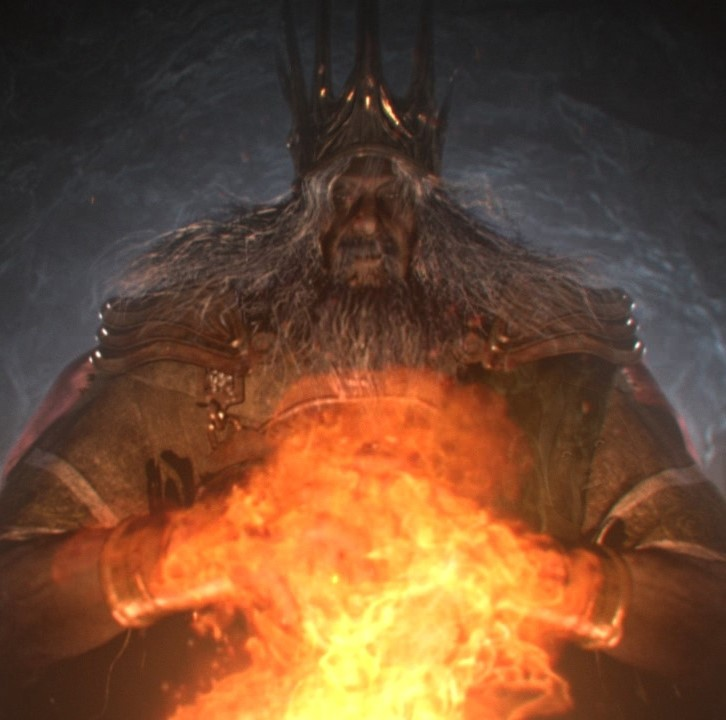
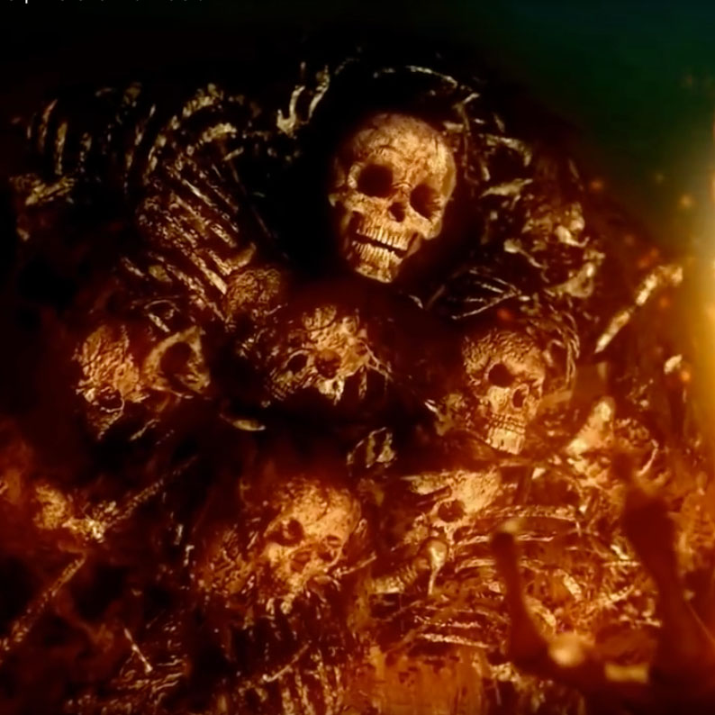
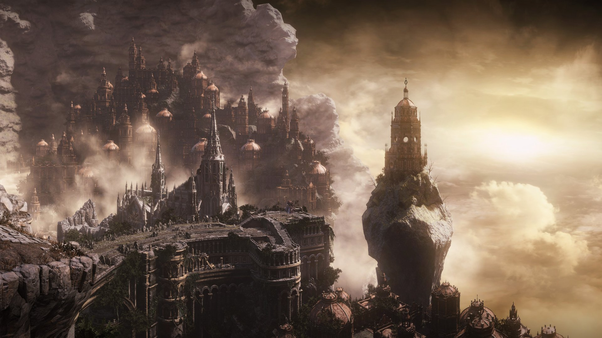

Before the Games
Before time began and before the gods took their thrones there was The Age of Ancients. During this time the world was unformed and shrouded by fog. It was a land of grey crags, enourmous trees known as archtrees, ruled over by the everlasting dragons. The everlasting dragons were timeless beings made of stone and given immortalitly by their stone. Then came the first flame, no one knows for sure how it came to be but what is known is that once the first flame came to into being everything changed. Heat and cold, life and death, light and dark, all were brought into existence by the emergence of the first flame. This flame attracted the beings that would gone on to birth the many races throughout the lands, each finding a powerful lord soul in the flames.

Gwyn, Lord of Sunlight
First of the gods, he found the soul of sunlight and would eventually father the entire pantheon of gods.

Gravelord Nito, First of the Dead
The first person to ever die, he found the soul of decay and would become this worlds version of the grim reaper.
These four lords would then wage war against the ancient dragons. Gwyn would unleash his legions of silver knights and weild great bolts of lightning that peeled the immortal scales of the dragons away. The Witch of Izalith and her daughters conjured immense storms of fire. Nito blanketed the land in a miasma of disease and decay, and the furtive pygmy fragmented the dark soul amoung his descendents eventually creating the ringed knights which Gwyn would take into his service as the war with the dragons became more costly. While all this was happening one of the dragons, Seath the Scaleless had decided to betray his kin. Seath had been born without the dragons immortalitly bestowing stone scales and because of this he was jealous and spiteful to the rest of his kind. He joined the four lords and helped them exstinguish the dragons once and for all, ending The Age of Ancients.

While the Lords emerged victorious and were free to carve out their new domains, Lord Gwyn was evidently afraid of the Dark Soul. He felt threatened by the capabilities of the Abyss the dark soul drew it's power from. It was similar to the first flame, with a key exception: it had seemingly endless potential, as it lost little to no power when divided unlike Gwyn's own Lord Soul. The Lord of Sunlight resolved the issue through skillful diplomacy: He gifted the Pygmies a city at the edge of the world, along with his daughter Filianore as a token of their pact. Gwyn's generosity was cause for much gratitude among the humans, which manifested as veneration and prostration to the Great Lord. With this clever move Gwyn ensured the subjugation of the Pygmy Lords, their Dark Soul trapped inside the Ringed City and expunged from the annals. Even the contributions of the Ringed Knights during the war against the dragons were erased from history, as well as the very existence of the furtive Pygmy.